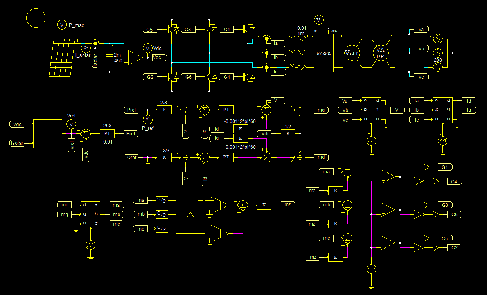

I have some experience doing digital circuits layout, and I interested on learning more about doing digital layout through algorithms such as Verilog. I believe field programmable gate arrays offer great flexibility that can provide the best solution for many projects, nowadays. Therefore, I aim to work on more FPGAs in the near future.
I am fairly interested in working on projects pertaining analog circuit design as they effort a certain level of depth that attracts me. Specifically, I would want to work on a communications related project, as this is topic of great significance for everyone and the applications have a broad range.
Additionally, I am intrigued to work on some smaller power electronics projects, which could often relate to what I expect to do in a communications project. I understand that biasing and supplying the appropriate is very important for optimally performing circuits, hence I believe I can use my current experience of power electronics to learn more about how to produce the best circuits.
Fortunately, my exposure to control systems has ranged across various fields, from power electronics to even mechanical systems. I would like to learn more about control systems, as this knowledge is quintessetial for integrated circuit design. Additionally, I am intrigued on applications of control systems in fields other than electrical engineering, as these can illustrate different approaches to controls problems.